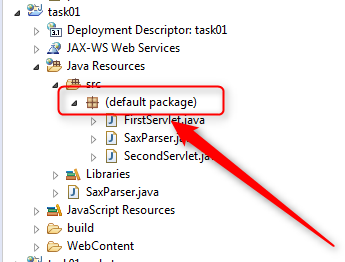

.
.
Все, друзья, больше тут добавить нечего.
Нет, конечно, тут можно было бы много чего добавить. Очень много!
Но, к сожалению, все самые страшные истерические визги я уже выплеснул в текст ошибки, про
Отсутствие корневого каталога для вашей программы
,
а ничего нового придумать не могу .
Поэтому в данном тексте, мы очень коротко заявляем:
Пакет для Java-класса — это то же самое, что и корневой каталог для любой программы!
Таким образом,
Вы не можете приступить к написанию Java-класса, не подумав перед этим, в каком пакете он будет располагаться!
Да, дальше вы откроете для себя, что просто закинуть свои классы в любой пакет, все равно какой, лишь бы он был — этого все еще не достаточно.
И вы приступите к изучению требований Code Conventions, которые диктуют нам правила именования для корневого пакета , и вы задумаетесь, как использовать под-пакеты (sub packages), чтобы логически разделить все классы вашей программы по их функциональному назначению, и будете задумываться над тем, как вложить пакеты друг в друга, чтобы это расположение было понятно всем коллегам, вашей команды...
Все это будет, но это будет потом, чуть позже... Это будет тогда, когда вы станете программистом! К сожалению, до тех пор, пока IDE показывает нам такую неприличную картину:
Вы все еще пока не программист. Ну, по крайней мере, не Java-программист. Просто потому, что ни один Java-программист, не знает, что такое default package. Ведь он никогда за свою карьеру не видел такой ситуации. Ведь он не знает о том, что:
Java-классы могут лежать в программе без пакетов!
Поэтому, друзья, мы имеем с вами очередной неприятный момент, когда мы должны немедленно прервать обучение, прервать написание сотен тысяч строк кода для ваших программ, прервать чтение всех толстых книг по дизайну архитектуры Java Enterprise Applications, и отложить мысли о том, какие именно супер-фреймворки я должен изучить прямо сейчас, чтобы немедленно получить работу программиста!
Все эти вопросы мы откладываем для того, чтобы в очередной раз ответить себе на один простейший вопрос:
Когда я в принципе могу претендовать на то, чтобы меня начали называть Java-программистом?
Ответ очень прост — как только вы начнете создавать пакеты для своей программы,
а только потом думать над тем, какие классы вам нужны, вы тут же из разряда просто людей
перейдете в разряд кандидатов, которые могут бороться за звание программиста,
которому заказчики готовы будут платить деньги!
Давайте уже, переходите скорее — нам тут без вас скучно
.